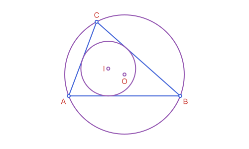
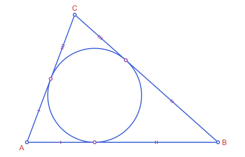
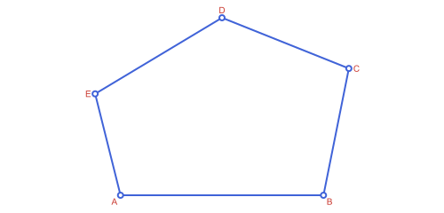
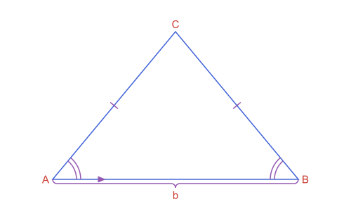
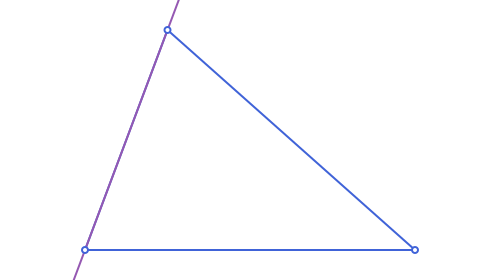

Cookbook: Checking & Drawing Recipes
Checking recipes
Are these points on a circle? On a line?
using Apollonius
a, b, c = APPoint(0.0, 0.0), APPoint(6.0, 0.0), APPoint(5.0, 4.0)
d = point_on(circumcircle(APTriangle(a, b, c)), 2.0)
is_concyclic(a, b, c, d), is_collinear(a, b, c)(true, false)
Which side of a line, and is a point in a region?
l = APLine(APPoint(0.0, 0.0), APPoint(4.0, 2.0))
side_of_line(APPoint(1.0, 3.0), l), APPoint(1.0, 1.0) in APHalfPlane2(l, APPoint(1.0, 3.0))(1, true)
See Predicates.
Drawing recipes
Fit a construction to a canvas
using Apollonius, Luxor
t = APTriangle(APPoint(0.0, 0.0), APPoint(6.0, 0.0), APPoint(1.5, 4.0))
cc = circumcircle(t)
lxm, lxo = @prepare_to_picture width=500 margin=30 begin
t
cc
end
lxm holds the canvas size, and lxo the objects in canvas coordinates, under the names they had in the block. Every name in the block must be an object with a size. See Workflow: From Construction to Figure.
Put a label outside a vertex
A2, B2, C2 = vertices(lxo.t)
G = centroid(lxo.t)
for (v, name) in zip((A2, B2, C2), ("A", "B", "C"))
label(name, label_anchor(v, G)...)
end
Label every vertex of a polygon
The same idea for any polygon, naming vertices in order ('A':'E' gives 5 letters; use any list of names, they don't need to be single letters):
pg = APStraightNgon([APPoint(0.0, 0.0), APPoint(8.0, 0.0), APPoint(9.0, 5.0), APPoint(4.0, 7.0), APPoint(-1.0, 4.0)])
names = string.(collect('A':'E'))
G = centroid(pg)
[label_anchor(v, G) for v in vertices(pg)] # (alignment, point) per vertex, ready for label5-element Vector{@NamedTuple{alignment::Symbol, point::APPoint{2, Float64}}}:
(alignment = :NW, point = [0.0, 0.0])
(alignment = :NE, point = [8.0, 0.0])
(alignment = :E, point = [9.0, 5.0])
(alignment = :S, point = [4.0, 7.0])
(alignment = :W, point = [-1.0, 4.0])
Mark equal sides and a right angle
On the fitted vertices A2, B2 and C2 of the previous recipe:
path(marks(APSegment(A2, B2); count=2); action=:stroke) # two ticks
path(only(marks(APAngle2(A2, B2, C2); style=:parallelogram, size=12)); action=:stroke) # the right-angle square
Marks, braces, arrowheads and their styles are in Marks, Labels & Decorations.
Draw a curve that goes on forever
Infinite lines and conics have no size, so name them with @unbounded inside the fitting block and draw them with extend:
lxm, lxo = @prepare_to_picture width=500 begin
t
l = APLine(t[1], t[2])
end
path(lxo.l, action=:stroke, extend=500)